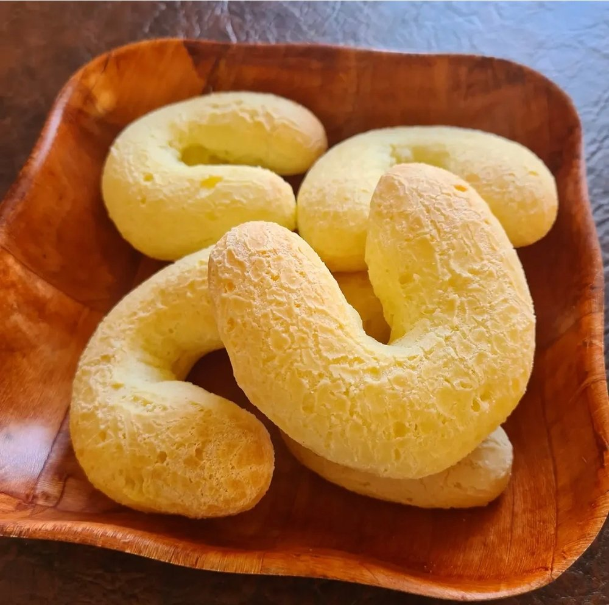
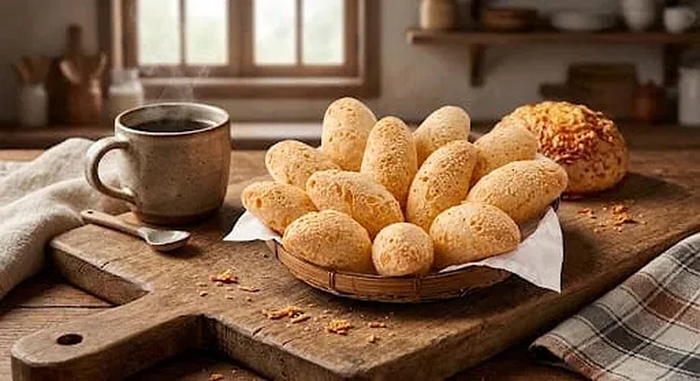
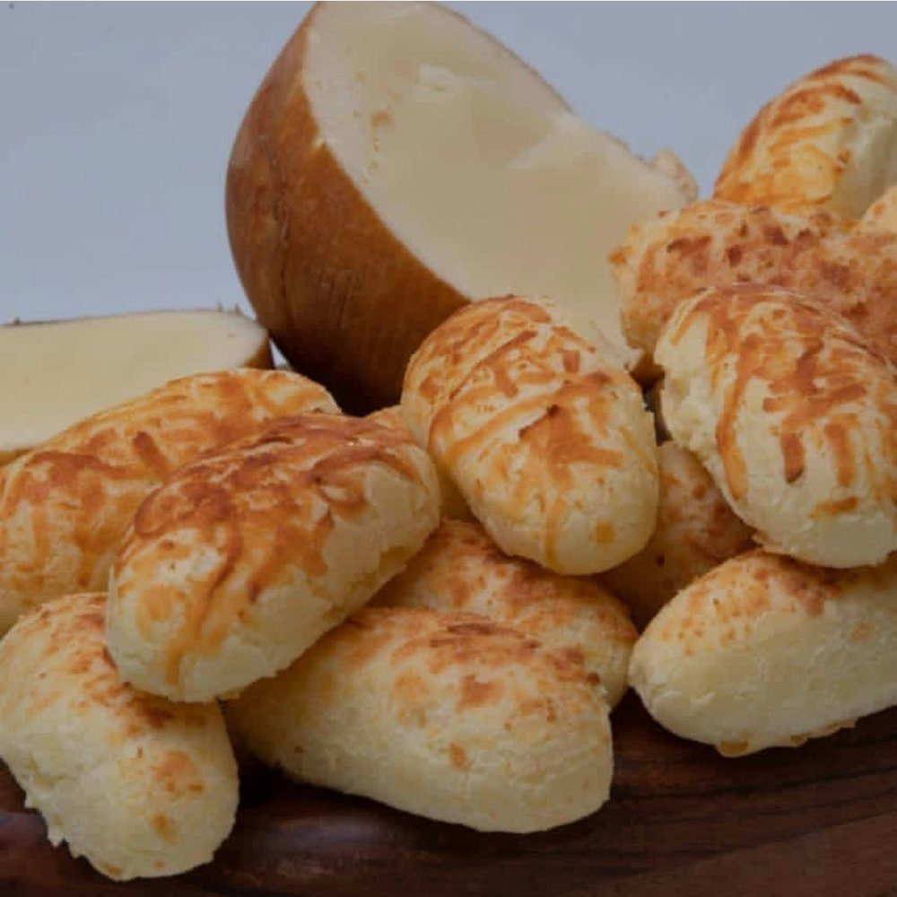
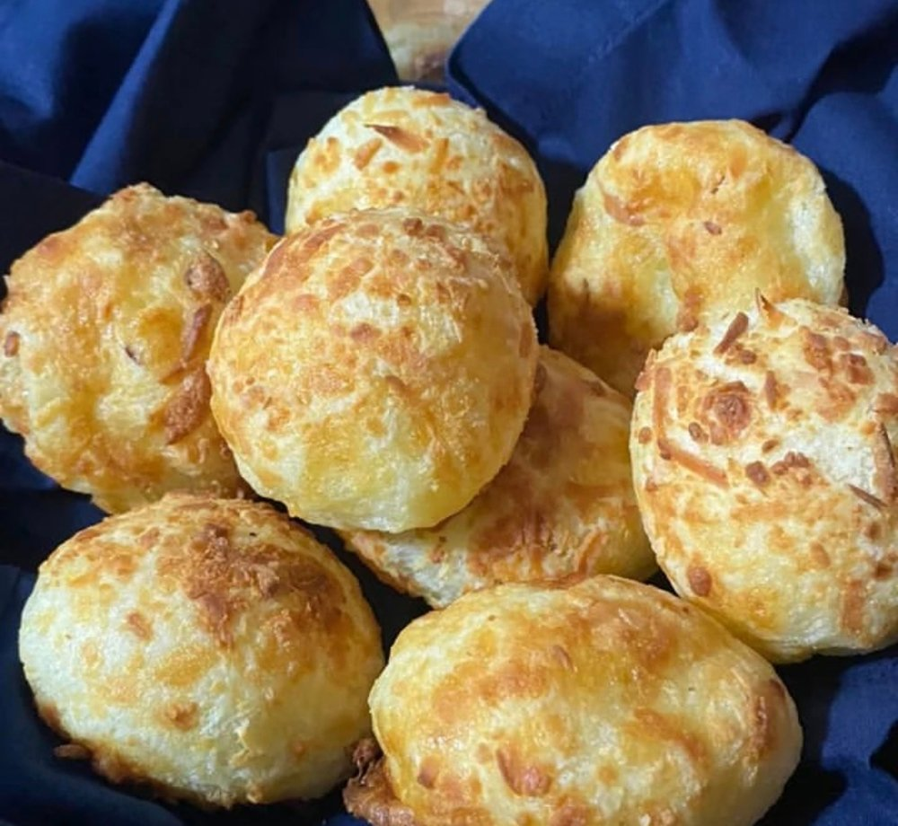
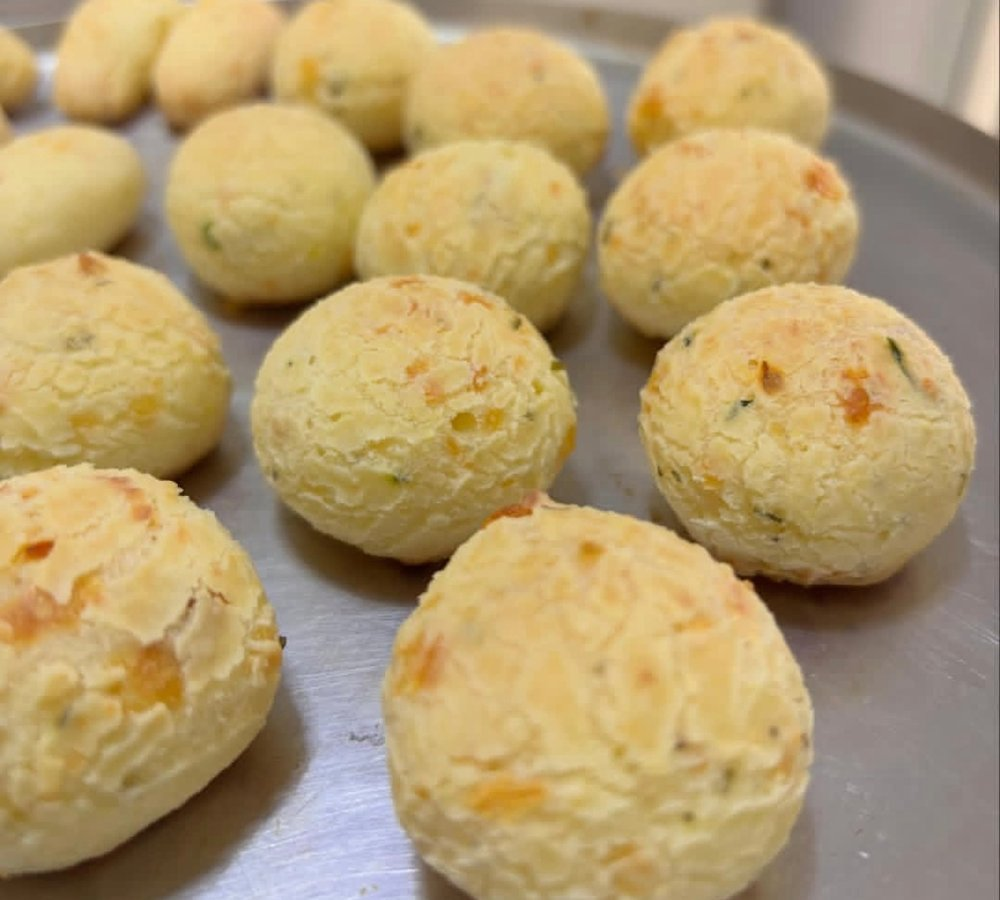

Coquetel
15 g por pão
Pacote2 kg
Quantidadecerca de 133 pães
- Pequeno no tamanho, ideal para compartilhar e petiscar
- Ótimo para festas, eventos e bandejas
- Do freezer direto para o forno

A linha completa
Do tradicional aos sabores especiais, em vários tamanhos. Aqui você conhece a linha; os valores e o pedido ficam no catálogo.
Pão de queijo tradicional
Crocante por fora e macio por dentro, do pãozinho de petiscar ao super lanche: escolha o tamanho certo para cada momento, da mesa de casa ao balcão do seu negócio.


Do freezer direto para o forno! Crocante por fora, macio por dentro e com muito queijo Minas artesanal. Em 25 a 30 minutinhos, o tempo de passar um café, ele sai douradinho e vai quentinho para a mesa.



Quantidades aproximadas, calculadas pelo peso médio de cada pão. Valores, embalagens e disponibilidade no catálogo.
Sabores especiais
Chipa, biscoitos, palitos e pães de queijo com mais de um queijo: a mesa mineira em versões diferentes.





Broas e petiscos
Broas de mesa de café, dadinho de tapioca e pão de queijo com grãos: variedade para o seu lanche, para a festa e para o seu cardápio.


Gostou?
Veja os valores e monte o seu pedido no catálogo, com entrega na Vila Carrão e região.